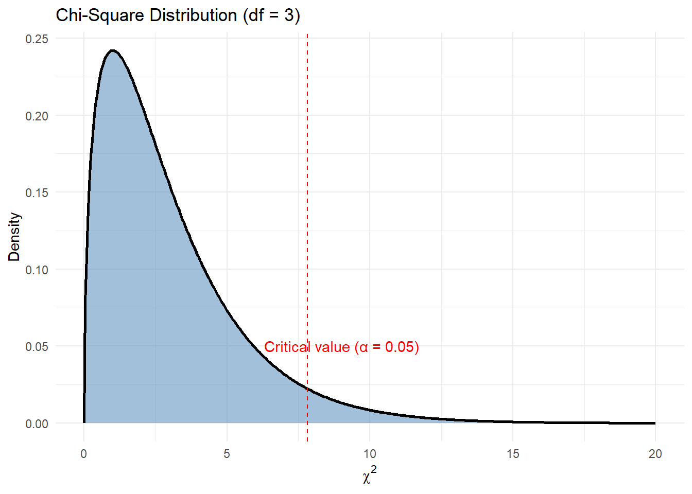

By the early 1900s, Karl Pearson had become a towering figure in the emerging field of statistics. With his invention of correlation, regression, and his devotion to the bell-shaped curve, he had given scientists tools to understand continuous data — things like height, weight, and age. These were the triumphs of mathematical elegance: smooth curves, symmetrical relationships, and clean, interpretable numbers.
Pearson believed that data — even data from nature — could be domesticated into symmetry. The world, as he saw it, was measurable, and the key to scientific advancement was in reducing complex variation to mathematical law. The normal distribution was the centrepiece of this worldview. It wasn’t just a technical tool — it was a philosophical claim. That under the chaos of nature, there was balance. Predictability. Order.
However, in the background, something nagged him; not all data is continous. there is a lot of categorical data for which you can’t calculate a mean or do regression. how do you interrogate such data and aswer questions?
Let’s consider this hypothetical scenario and frame the rest of the story on it: One day, a naturalist came to Karl Pearson with a very interesting kind of data.
“In Glen Affric,” the naturalist explained, “I observed 30 golden eagles and 20 red kites. In Glen Nevis, 25 golden eagles and 25 red kites. In Rannoch Moor, 15 eagles and 35 kites. Are the species counts dependent on location or it doesnt matter? and at each location, do the species counts/proportions match our expectations?”
There were no heights. No weights. No means. Just categories — and counts.
This data defied Pearson’s existing tools. You cannot take the average of ‘red kite’ and ‘golden eagle’. You cannot compute a standard deviation across glens, nor fit a bell curve to discrete bird species. And yet, the question behind the data was clearly statistical: Are bird species independent of location, or is there a hidden ecological pattern?
This wasn’t idle curiosity. In an era before modern conservation policy, understanding the distribution of species across landscapes was vital. If red kites preferred moors and golden eagles favoured highland glens, it could suggest niche partitioning — or it could suggest environmental degradation, habitat competition, or even human interference.
And so Pearson found himself standing before an intellectual chasm: how do you analyse data that has no mean, no variance, no curve?
The Problem of Categorical Data
Pearson understood immediately what was at stake. He had built a framework that was astonishingly effective — but it had boundaries. The logic of correlation, for instance, assumed that the underlying variables were normally distributed. If not, the coefficient could be distorted, biased, even misleading. His early work relied on the assumption that nature, when measured, would fall obediently into the arms of the bell curve.
But here, in this messy field data, the bell curve had no place. The data could not be smoothed or standardised. They were counts, nothing more — frequencies of occurrence. Yet beneath those frequencies lay a pattern. The very idea of science is to determine whether a pattern is real or illusory. And so Pearson began to think.
If you couldn’t compare means, perhaps you could compare frequencies — not in the sense of variance, but in the sense of discrepancy. How different is what we observe from what we expect?
And thus emerged one of the most brilliant — and most underappreciated — shifts in modern science.
A Test for Discrepancy: The Birth of the Chi-Square
Pearson realised he needed to quantify the gap between expectation and observation. He devised a deceptively simple formula:
\[
\chi^2 = \sum \frac{(O_i - E_i)^2}{E_i}
\]
\(O_i\) was the observed count in each category.
\(E_i\) was the expected count, under the assumption of independence.
Squaring the difference removed direction — a shortfall or an excess both became evidence.
Dividing by \(E_i\) scaled the contribution of each category, adjusting for the size of expectation.
In this sum, Pearson saw a universal measure of surprise. If the observations closely matched expectations, chi-square would be small. If they diverged wildly, the statistic would grow large.
But was it meaningful? Could he say when the result was too large to have arisen by chance?
Yes — and this is where Pearson’s mathematical gift became apparent. He derived the theoretical distribution of chi-square under the null hypothesis. He showed that, when the expected frequencies were large enough and the observations were independent, the statistic followed a specific pattern — what would become known as the chi-square distribution.
It was: - Bounded below at 0 (perfect match) - Right-skewed, especially with few categories - Unbounded above — allowing for arbitrarily large mismatches, though increasingly improbable
This distribution let Pearson calculate, for any given \(X^2\) value, the probability of observing such a result under the assumption of independence.
It was a revelation. For the first time, one could assign a mathematical likelihood to a pattern in categorical data.
Why “Chi-Square”?
The naming was natural. Pearson used the Greek letter \(X\) to represent the variable — a common notation at the time. Since the formula involved the sum of squared discrepancies, he called it chi-square. What began as a placeholder symbol became the name of one of the most important distributions in statistics.
The Ripple Effect: More than Independence
At first, the \(X^2\) test was used primarily to test goodness-of-fit and independence — such as whether bird species and habitats were associated. But over time, its versatility became apparent. It was used to:
Test fairness of dice and coins
Validate genetic segregation ratios
Detect selection bias in sampling
Analyse voting patterns
And in a particularly elegant twist, it became a way to test one of Pearson’s own assumptions: normality.
Remember: the correlation coefficient Pearson developed relies on data being approximately normal. If that assumption fails, the coefficient can behave badly — inflating or hiding relationships.
But how do you test whether data is normal? One way, Pearson realised, was to bin the data into categories — say, intervals of values — and compare the observed frequencies with the probabilities predicted by a normal distribution.
In this way, the chi-square test became a way to evaluate how well continuous data conformed to a normal model. The logic was recursive. The chi-square test could test the assumptions required for the very methods Pearson had pioneered.
It was a beautiful moment of statistical self-reflection. The tool for testing categories could be used to validate the use of tools for continuous variables.
Visualising the Chi-Square Distribution
Code
library(ggplot2)library(dplyr)# Example: chi-square with 3 degrees of freedomdf <-3x <-seq(0, 20, length.out =500)y <-dchisq(x, df = df)ggplot(data.frame(x, y), aes(x, y)) +geom_area(fill ="steelblue", alpha =0.5) +geom_line(color ="black", linewidth =1) +geom_vline(xintercept =qchisq(0.95, df), linetype ="dashed", color ="red") +annotate("text", x =qchisq(0.95, df) +1.2, y =0.05,label ="Critical value (\u03B1 = 0.05)", color ="red") +labs(title ="Chi-Square Distribution (df = 3)",x =expression(chi^2), y ="Density") +theme_minimal()

Demonstrating Chi-Square in R with Real Datasets
chi-square test of independence
Let’s walk through the naturalist’s bird observations and answer the first question, that is; Are the species counts dependent on location or it doesnt matter? This requires us to test whether two categorical variables are independent (e.g., species vs location). For this, Karl came up with the chi-square test of independence, the more nuanced of two flavours of chi-square tests (we will show the other one below). It test requires us to make two-way tables as follows:
Golden Eagle Red Kite
Glen Affric 30 20
Glen Nevis 25 25
Rannoch Moor 15 35
Step 2: Get row/column totals and compute expected values
Before computing the chi-square statistic, we need the expected values — the counts we’d expect in each cell if bird species and location were independent.
You might ask:
Why aren’t expected values just evenly split, like 0.5 for each cell?
Because the overall row and column totals aren’t evenly split. The expected count for each cell depends on both:
How many total birds are at each location (row totals), and
How many total birds belong to each species (column totals)
For example:
Golden eagles make up 70 out of 150 birds → 46.7%
Red kites make up 80 out of 150 birds → 53.3%
We use these proportions to distribute expectations across each location.
What outer() does here is multiply each row total with each column total, producing a matrix of numerators. Then we divide each by the grand total to get expected counts under the null hypothesis of independence.
These expected values are what you’d expect if location and species are unrelated. The rest of the test compares observed counts to these expectations.
Note: The two tests yield equal results. We showed the manual calculation just to show you what the function does underneath. Also note that Karl would have stopped at calculating the X-squared value. the p-values are a later invention.
Chi-Square Goodness-of-Fit Test
This can help us answer the second question; At each location, do the species counts/proportions match our expectations?
This test: - Requires a single categorical variable, with expected proportions supplied
Tests whether observed counts match expected counts
No need for a two-way table; One row is fine, because we are testing whether the distribution of categories fits a given expectation at a location.
expected <-c(0.6, 0.4) *sum(observed) # 60% and 40% of 50expected
[1] 30 20
Then the chi-square goodness-of-fit test is:
Code
chisq.test(x = observed, p =c(0.6, 0.4))
Chi-squared test for given probabilities
data: observed
X-squared = 0, df = 1, p-value = 1
On the p-values
In a chi-square test, the critical value serves as a threshold beyond which the observed data is considered too unlikely to have occurred by chance, assuming the null hypothesis is true. For example, if we are testing whether a single set of bird species counts matches expected proportions using a chi-square goodness-of-fit test with two categories, the degrees of freedom would be 1. At the conventional 5% significance level (α = 0.05), the critical value from the chi-square distribution is 3.84. This means that if the calculated chi-square statistic exceeds 3.84, we reject the null hypothesis and conclude that the observed frequencies differ significantly from the expected ones. Conversely, if the statistic is less than or equal to 3.84, we fail to reject the null — the data are consistent with our expectations. This critical value isn’t chosen arbitrarily; it marks the point on the chi-square curve beyond which only 5% of the distribution lies. In essence, it represents the boundary of “statistical surprise”: if your data cross this boundary, the mismatch is too large to attribute to randomness alone, and thus, potentially meaningful.
Some real data
Let’s apply Pearson’s insight to real datasets. These examples show how we test categorical associations in modern contexts — ecology, sustainability, and applied biology.
1. mtcars: Transmission vs. Engine Cylinders (vehicle design)
Code
tab1 <-table(mtcars$cyl, mtcars$am)knitr::kable(tab1, caption ="Contingency Table: Cylinders vs Transmission")
Interpretation: Is the number of cylinders in a car independent of whether it has an automatic or manual transmission? In sustainability contexts, this may reflect the evolution of engine design towards efficiency.
2. PlantGrowth: Treatment vs. Outcome (botanical research)
Chi-squared test for given probabilities
data: tab2
X-squared = 0, df = 2, p-value = 1
Interpretation: Are the plant growth groups equally distributed? This is relevant in ecological experiments testing different treatment effects under resource constraints.
3. datasets::HairEyeColor: Eye Colour vs Hair Colour (population ecology)
Interpretation: Are hair and eye colour independent in a human population? Similar analyses are done in wildlife studies to evaluate trait correlations.
Conclusion: A Legacy Beyond the Curve
Pearson began his statistical life in pursuit of curves. His early work was an ode to the normal distribution — a belief that nature followed symmetric laws. But with the chi-square test, he acknowledged something deeper: that patterns exist even in the absence of smoothness.
Where there is no mean, no variance, no regression line — there may still be structure. And where there is structure, there is science.
In testing independence, fairness, association, and normality, the chi-square test has proven to be one of the most versatile and enduring tools in the history of data. And for students and scientists alike, it offers a profound lesson:
The world may not always follow the curve — but it always leaves a trace in its frequencies.
Source Code
---title: "The Chi-Square story"format: html: toc: true theme: cosmo code-fold: true code-tools: trueexecute: echo: true warning: false message: false---## The Wilderness of CountsBy the early 1900s, **Karl Pearson** had become a towering figure in the emerging field of statistics. With his invention of **correlation**, **regression**, and his devotion to the **bell-shaped curve**, he had given scientists tools to understand continuous data — things like height, weight, and age. These were the triumphs of mathematical elegance: smooth curves, symmetrical relationships, and clean, interpretable numbers.Pearson believed that data — even data from nature — could be domesticated into symmetry. The world, as he saw it, was measurable, and the key to scientific advancement was in reducing complex variation to mathematical law. The **normal distribution** was the centrepiece of this worldview. It wasn't just a technical tool — it was a philosophical claim. That under the chaos of nature, there was balance. Predictability. Order.However, in the background, something nagged him; not all data is continous. there is a lot of categorical data for which you can't calculate a mean or do regression. how do you interrogate such data and aswer questions?Let's consider this hypothetical scenario and frame the rest of the story on it: One day, a naturalist came to Karl Pearson with a very interesting kind of data.> "In Glen Affric," the naturalist explained, "I observed 30 golden eagles and 20 red kites. In Glen Nevis, 25 golden eagles and 25 red kites. In Rannoch Moor, 15 eagles and 35 kites. Are the species counts dependent on location or it doesnt matter? and at each location, do the species counts/proportions match our expectations?"There were no heights. No weights. No means. Just **categories** — and **counts**. This data defied Pearson’s existing tools. You **cannot take the average of ‘red kite’ and ‘golden eagle’.** You cannot compute a standard deviation across glens, nor fit a bell curve to discrete bird species. And yet, the question behind the data was clearly statistical: *Are bird species independent of location, or is there a hidden ecological pattern?* This wasn't idle curiosity. In an era before modern conservation policy, understanding the **distribution of species across landscapes** was vital. If red kites preferred moors and golden eagles favoured highland glens, it could suggest niche partitioning — or it could suggest environmental degradation, habitat competition, or even human interference.And so Pearson found himself standing before an intellectual chasm: how do you analyse data that has **no mean, no variance, no curve**?## The Problem of Categorical DataPearson understood immediately what was at stake. He had built a framework that was astonishingly effective — but it had boundaries. The logic of correlation, for instance, assumed that the underlying variables were normally distributed. If not, the coefficient could be distorted, biased, even misleading. His early work relied on the assumption that nature, when measured, would fall obediently into the arms of the bell curve.But here, in this messy field data, the bell curve had no place. The data could not be smoothed or standardised. They were counts, nothing more — **frequencies** of occurrence. Yet beneath those frequencies lay a pattern. The very idea of science is to determine whether a pattern is real or illusory. And so Pearson began to think.If you couldn't compare means, perhaps you could compare **frequencies** — not in the sense of variance, but in the sense of **discrepancy**. How different is what we observe from what we expect?And thus emerged one of the most brilliant — and most underappreciated — shifts in modern science.## A Test for Discrepancy: The Birth of the Chi-SquarePearson realised he needed to quantify the **gap between expectation and observation**. He devised a deceptively simple formula:$$\chi^2 = \sum \frac{(O_i - E_i)^2}{E_i}$$- $O_i$ was the **observed count** in each category.- $E_i$ was the **expected count**, under the assumption of independence.- Squaring the difference removed direction — a shortfall or an excess both became evidence.- Dividing by $E_i$ scaled the contribution of each category, adjusting for the size of expectation.In this sum, Pearson saw a universal measure of **surprise**. If the observations closely matched expectations, chi-square would be small. If they diverged wildly, the statistic would grow large.But was it meaningful? Could he say when the result was **too large** to have arisen by chance?Yes — and this is where Pearson's mathematical gift became apparent. He derived the **theoretical distribution** of chi-square under the null hypothesis. He showed that, when the expected frequencies were large enough and the observations were independent, the statistic followed a specific pattern — what would become known as the **chi-square distribution**.It was:- **Bounded below** at 0 (perfect match)- **Right-skewed**, especially with few categories- **Unbounded above** — allowing for arbitrarily large mismatches, though increasingly improbableThis distribution let Pearson calculate, for any given $X^2$ value, the **probability** of observing such a result under the assumption of independence.It was a revelation. For the first time, one could assign a mathematical **likelihood** to a pattern in categorical data.## Why “Chi-Square”?The naming was natural. Pearson used the Greek letter $X$ to represent the variable — a common notation at the time. Since the formula involved the **sum of squared discrepancies**, he called it **chi-square**. What began as a placeholder symbol became the name of one of the most important distributions in statistics.## The Ripple Effect: More than IndependenceAt first, the $X^2$ test was used primarily to test **goodness-of-fit** and **independence** — such as whether bird species and habitats were associated. But over time, its versatility became apparent. It was used to:- Test **fairness of dice and coins**- Validate **genetic segregation ratios**- Detect **selection bias** in sampling- Analyse **voting patterns**And in a particularly elegant twist, it became a way to **test one of Pearson’s own assumptions**: **normality**.Remember: the **correlation coefficient** Pearson developed relies on data being **approximately normal**. If that assumption fails, the coefficient can behave badly — inflating or hiding relationships.But how do you test whether data is normal? One way, Pearson realised, was to **bin the data into categories** — say, intervals of values — and compare the observed frequencies with the **probabilities predicted by a normal distribution**.In this way, the **chi-square test** became a way to evaluate **how well continuous data conformed to a normal model**. The logic was recursive. The chi-square test could test the assumptions required for the very methods Pearson had pioneered.It was a beautiful moment of statistical self-reflection. The tool for testing categories could be used to validate the use of tools for continuous variables. ## Visualising the Chi-Square Distribution```{r}library(ggplot2)library(dplyr)# Example: chi-square with 3 degrees of freedomdf <-3x <-seq(0, 20, length.out =500)y <-dchisq(x, df = df)ggplot(data.frame(x, y), aes(x, y)) +geom_area(fill ="steelblue", alpha =0.5) +geom_line(color ="black", linewidth =1) +geom_vline(xintercept =qchisq(0.95, df), linetype ="dashed", color ="red") +annotate("text", x =qchisq(0.95, df) +1.2, y =0.05,label ="Critical value (\u03B1 = 0.05)", color ="red") +labs(title ="Chi-Square Distribution (df = 3)",x =expression(chi^2), y ="Density") +theme_minimal()```---## Demonstrating Chi-Square in R with Real Datasets### chi-square test of independenceLet’s walk through the naturalist’s bird observations and answer the first question, that is; Are the species counts dependent on location or it doesnt matter? This requires us to test whether two categorical variables are independent (e.g., species vs location). For this, Karl came up with the ***chi-square test of independence***, the more nuanced of two flavours of chi-square tests (we will show the other one below). It test requires us to make two-way tables as follows:Step 1: Create the observed table```{r}bird_counts <-matrix(c(30, 20, # Glen Affric25, 25, # Glen Nevis15, 35# Rannoch Moor), ncol =2, byrow =TRUE)rownames(bird_counts) <-c("Glen Affric", "Glen Nevis", "Rannoch Moor")colnames(bird_counts) <-c("Golden Eagle", "Red Kite")bird_counts```Step 2: Get row/column totals and compute expected valuesBefore computing the chi-square statistic, we need the expected values — the counts we’d expect in each cell if bird species and location were independent.You might ask:Why aren’t expected values just evenly split, like 0.5 for each cell?Because the overall row and column totals aren't evenly split. The expected count for each cell depends on both:How many total birds are at each location (row totals), andHow many total birds belong to each species (column totals)For example:Golden eagles make up 70 out of 150 birds → 46.7%Red kites make up 80 out of 150 birds → 53.3%We use these proportions to distribute expectations across each location.$$E_{ij} = \frac{(\text{Row Total}_i \times \text{Column Total}_j)}{\text{Grand Total}}$$What ```outer()``` does here is multiply each row total with each column total, producing a matrix of numerators. Then we divide each by the grand total to get expected counts under the null hypothesis of independence.These expected values are what you'd expect if location and species are unrelated. The rest of the test compares observed counts to these expectations.```{r}row_totals <-rowSums(bird_counts)col_totals <-colSums(bird_counts)total <-sum(bird_counts)expected <-outer(row_totals, col_totals) / totalexpected```Step 3: Compute chi-square statistic manually```{r}chisq_contrib <- (bird_counts - expected)^2/ expectedround(chisq_contrib, 2) # Show individual contributionschisq_manual <-sum(chisq_contrib)chisq_manual # Final chi-square value```Step 4 (optional): Compare to chisq.test()```{r}chisq.test(bird_counts)```**Note: ** The two tests yield equal results. We showed the manual calculation just to show you what the function does underneath. Also note that Karl would have stopped at calculating the X-squared value. the p-values are a later invention.### Chi-Square Goodness-of-Fit TestThis can help us answer the second question; At each location, do the species counts/proportions match our expectations? This test:- Requires a single categorical variable, with expected proportions supplied- Tests whether observed counts match expected counts- No need for a two-way table; One row is fine, because we are testing whether the distribution of categories fits a given expectation at a location.Suppose you observed just Glen Affric:```{r}observed <-c(Golden_Eagle =30, Red_Kite =20)observed```Let’s say your prior ecological knowledge says:- Golden eagles should be 60%- Red kites should be 40%Then the expected should be:```{r}expected <-c(0.6, 0.4) *sum(observed) # 60% and 40% of 50expected```Then the chi-square goodness-of-fit test is:```{r}chisq.test(x = observed, p =c(0.6, 0.4))```## On the p-valuesIn a chi-square test, the critical value serves as a threshold beyond which the observed data is considered too unlikely to have occurred by chance, assuming the null hypothesis is true. For example, if we are testing whether a single set of bird species counts matches expected proportions using a chi-square goodness-of-fit test with two categories, the degrees of freedom would be 1. At the conventional 5% significance level (α = 0.05), the critical value from the chi-square distribution is 3.84. This means that if the calculated chi-square statistic exceeds 3.84, we reject the null hypothesis and conclude that the observed frequencies differ significantly from the expected ones. Conversely, if the statistic is less than or equal to 3.84, we fail to reject the null — the data are consistent with our expectations. This critical value isn’t chosen arbitrarily; it marks the point on the chi-square curve beyond which only 5% of the distribution lies. In essence, it represents the boundary of “statistical surprise”: if your data cross this boundary, the mismatch is too large to attribute to randomness alone, and thus, potentially meaningful.## Some real dataLet’s apply Pearson’s insight to real datasets. These examples show how we test categorical associations in modern contexts — ecology, sustainability, and applied biology.### 1. `mtcars`: Transmission vs. Engine Cylinders (vehicle design)```{r}tab1 <-table(mtcars$cyl, mtcars$am)knitr::kable(tab1, caption ="Contingency Table: Cylinders vs Transmission")chisq.test(tab1)```> **Interpretation**: Is the number of cylinders in a car independent of whether it has an automatic or manual transmission? In sustainability contexts, this may reflect the evolution of engine design towards efficiency.---### 2. `PlantGrowth`: Treatment vs. Outcome (botanical research)```{r}data(PlantGrowth)tab2 <-table(PlantGrowth$group)chisq.test(tab2)```> **Interpretation**: Are the plant growth groups equally distributed? This is relevant in ecological experiments testing different treatment effects under resource constraints.---### 3. `datasets::HairEyeColor`: Eye Colour vs Hair Colour (population ecology)```{r}tab3 <-margin.table(HairEyeColor, margin =c(1, 2))chisq.test(tab3)```> **Interpretation**: Are hair and eye colour independent in a human population? Similar analyses are done in wildlife studies to evaluate trait correlations.---## Conclusion: A Legacy Beyond the CurvePearson began his statistical life in pursuit of curves. His early work was an ode to the normal distribution — a belief that nature followed symmetric laws. But with the **chi-square test**, he acknowledged something deeper: that **patterns exist even in the absence of smoothness**.Where there is no mean, no variance, no regression line — there may still be **structure**. And where there is structure, there is science.In testing independence, fairness, association, and normality, the chi-square test has proven to be one of the most versatile and enduring tools in the history of data. And for students and scientists alike, it offers a profound lesson:> **The world may not always follow the curve — but it always leaves a trace in its frequencies.**